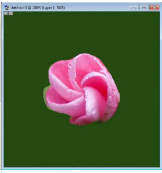

| HOME |
|---|
| BACK |
| PROCEDURE TO EXTRACT THE FLOWER ONLY FROM GIVEN PHOTOGRAPHIC IMAGE AND ORGANISE IT ON A BACKGROUND. SELECTING YOUR OWN BACKGROUND FOR ORGANISATION |
STEPS:- 1. Open adobe Photoshop 7.0-> file->open-> choose a file and open it. 2. Select the flower from the image using the lasso tool. 3. Go to edit-> copy->Again go to file->new->give height 500 and width 500. 4. Choose appropriate background and foreground colour from the tool bar. 5. Go to edit->fill->under use select background colour->ok. 6. Go to edit->paste OUTPUT:-  |